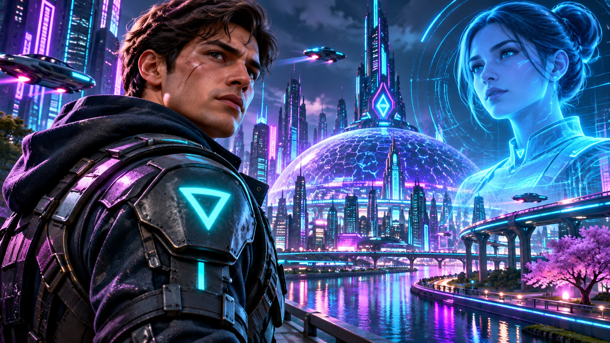

¿QUÉ DECIDÍS HACER?

◇ MISIÓN INTERACTIVA · PROTOCOLO MORFEO
La Ciudad que Dormía
Año 2087. Nova Arcadia cae en un sueño misterioso. Sos Kai y tu aliada es VERA. Cada decisión te acerca a la verdad.
22 escenas · Caminos alternativos · Narración opcional